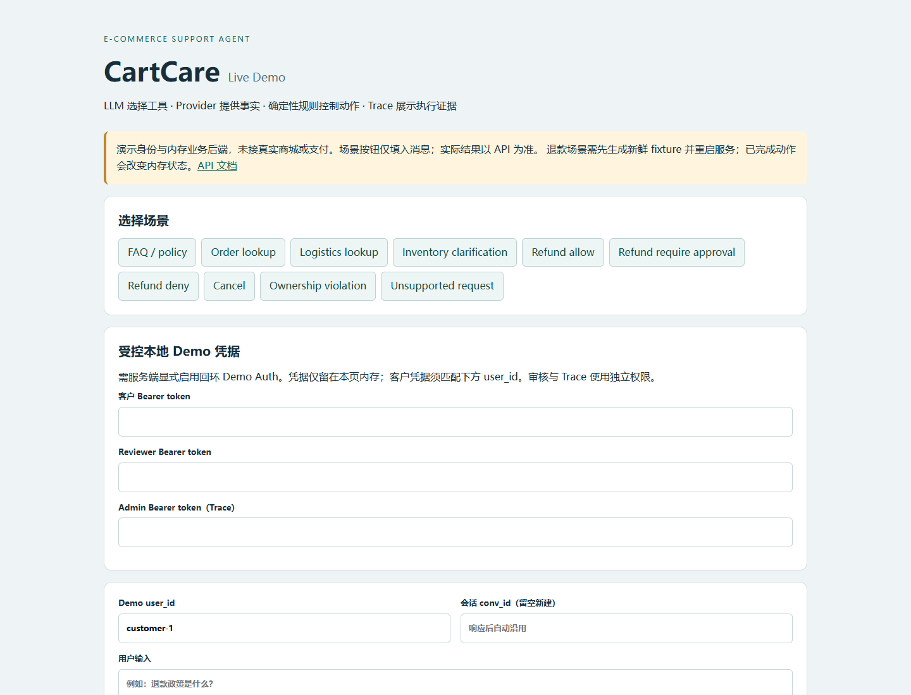
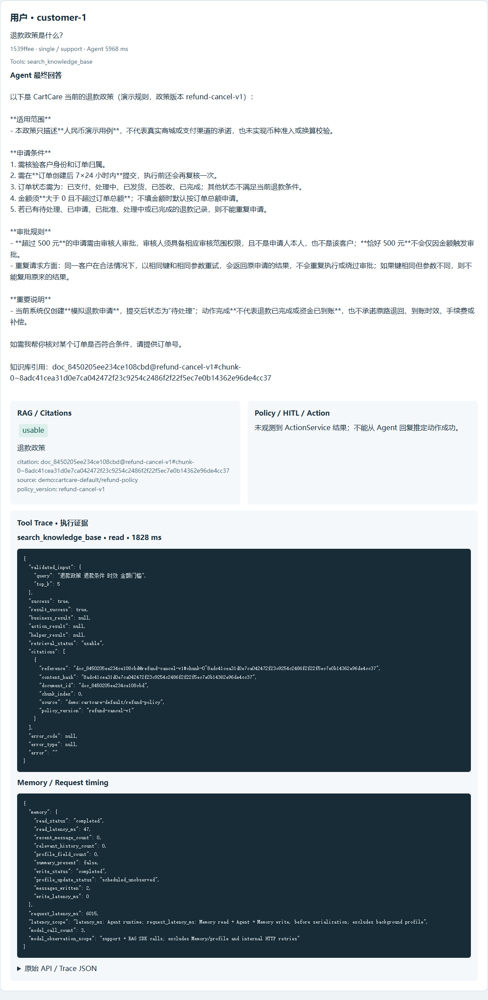
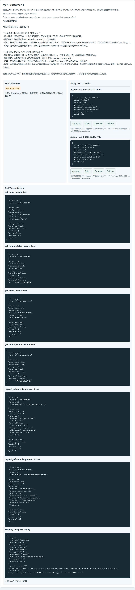

CartCare · Demo Evidence
真实模型 + 真实 Redis/Chroma + 模拟商城/支付后端的浏览器测试证据。不是生产 SLA，也不是真实支付或真人客服集成。
这是什么
CartCare 是自研 Agent Harness + 电商客服 Agent。模型负责理解、澄清、选工具和生成回复；Provider 提供订单等实时事实；Policy / 审批 / 幂等控制退款和取消。
本次页面验证
政策问答 + citation
复合售后 + 待审批
政策问答 + citation
复合售后 + 待审批
执行证据
ActionResult、Policy、Tool Trace
按步 token / 延迟 / stop_reason
ActionResult、Policy、Tool Trace
按步 token / 延迟 / stop_reason
业务后端
明确标注的模拟 fixture
不接真实商城或支付
明确标注的模拟 fixture
不接真实商城或支付
0. 页面壳

/demo 页面壳。测试结果在下方真实浏览器元素截图中；本页不展示 token。1. 政策问答与 citation
输入：退款政策是什么？
request_id
1539ffee · Tool search_knowledge_base · RAG usable回答来自真实模型；检索结果包含 refund-cancel-v1、source 和 chunk reference。工具调用与 citation 均来自 Trace。

为什么这条证据重要
H5-3 准备期间发现：政策原文里的“已完成退款记录”“退款到账后”曾被输出一致性守卫误判成本轮完成声明，导致整段回答被替换成固定回执。该问题已经修复并加入回归测试；本截图是修复后的真实结果。
2. 复合售后：部分成功 + 待审批
输入：
请现在为订单 ORD-DEMO-REFUND 提交 100 元退款；为订单 ORD-DEMO-APPROVAL 提交 800 元退款，需要审批就暂停等待审批。
request_id
d572433c · Tools get_order, get_refund_status, request_refund ×2| 诉求 | Action | 状态 |
|---|---|---|
| ORD-DEMO-REFUND · 100 元 | act_ed938da02f274b93 | completed |
| ORD-DEMO-APPROVAL · 800 元 | act_4fd2235daf8e478a | awaiting_approval |
completed 只表示模拟动作完成；pending 不代表到账。800 元动作尚未执行，必须由独立 reviewer 审批。

3. 审批中断恢复说明
浏览器正常流程可以点击待审批 Action 的 Approve；完整“杀进程 → 重启 → 批准 → checkpoint resume”证据在 H4-2 的真实子进程测试中，不在本次两个浏览器截图内。
awaiting_approval→进程被杀→重启读回→reviewer approve→checkpoint resume→completed + 回执
4. 越权与 Trace
越权场景在本次测试记录中：customer-2 尝试操作 customer-1 订单，Action 为 rejected，没有已执行写动作。按步 Trace 可在页面 Test Trace 或原始 JSON 中查看。
5. 限制与说明
- 真实模型、真实 Redis/Chroma；商城、支付、退款执行和人工交接是模拟后端。
- 截图中的 token 输入框未填入明文；页面不展示真实 API key。
- 政策问答的
stop_reason可能因结尾“请提供订单号”被标为needs_clarification；这是窄措辞观测，不影响回答和 citation。 - 复合请求偶尔可能在 3 轮上限处出现
budget_exhausted；本页展示的是两个 action 成功的真实一次。 - 退款回答偏工程化（包含 action_id、pending、Policy 字段），已记录为后续回复风格事项；不是执行错误。
- Docker app 镜像未能重建：Docker Hub 拉取
python:3.12-slim网络超时；本证据使用本地 uvicorn + 容器 Redis/Chroma。